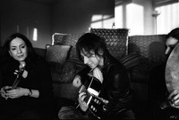

|
|

حمایت جییانا ننینی موسیقیدان و خواننده راک ایتالیایی از کمپین یک میلیون امضا
سه شنبه11 اردیبهشت 1386
من نیز یکی از شما هستم
تغییر برای برابری : من جییانا ننینی، موسیقیدان و خواننده راک ایتالیائی هستم. در دسامبر ۲۰۰۶ برای شناخت مردم و موزیک شما به ایران آمدم تا برای اپرای اخیرم، Pia de Tolomei، سازهای ایرانی را استفاده و ضبط کنم.
از این رو با تعداد بسیاری از موسیقیدانهای با استعداد ایرانی کار کردم که بعضی از آنان نوازندگان زن بودند، افرادی چون نگار خارکان کمانچهزن، و نوشین پاسدار نوازنده عود. همچنین با مهسا وحدت خواننده بینهایت فوقالعاده ملاقات کردم و شانس آن را داشتم که با او بنوازم و بخوانم.
من همچنین در دوران اقامتم در ایران با جنبش زنان و کمپین یک میلیون امضاء آشنا شدم و تحت تاثیر عملکرد آن و انرژی جنبش زنان ایران قرار گرفتهام. مصمم هستم از این جنبش به هر طریقی که می توانم حمایت کنم.
من نیز یکی از شما هستم
جییانا